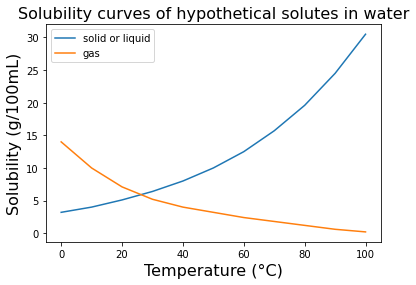

Section 9.2 Solution
A solution is a homogeneous mixture composed of two or more substances. The substance that dissolves is called the solute, and the substance that does the dissolving is called the solvent. When the solute dissolves in the solvent, the resulting solution is a uniform mixture, called solution.
\begin{equation*}
Solute + Solvent = Solution
\end{equation*}
Solubility is the ability of a substance to dissolve in a solvent to form a solution. The solubility of a substance depends on various factors such as temperature, pressure, and the nature of the solute and solvent. In general, "like dissolves like," meaning that substances with similar chemical properties tend to dissolve in each other. The amount of solute that can dissolve in a given amount of solvent is limited by the solubility of the solute in the solvent. When a solution contains the maximum amount of solute that can dissolve in the solvent at a given temperature and pressure, is said to be a saturated solution. If more solute is added to a saturated solution, it will not dissolve and will form a separate phase, such as a solid precipitate or gas bubbles.
Concentration: The concentration of a solution is the amount of solute dissolved in a specific amount of solvent or solution. The term "saturated" and "unsaturated" are used to describe the concentration of solute in a solution. A saturated solution contains maximum amount of solute that can dissolve in a given solvent at a particular temperature and pressure. No more solute can be dissolved in the solvent of the saturated solution without increasing the temperature or pressure. Any additional solute added to the solution will not dissolve and will remain as a solid. On the other hand, an unsaturated solution contains less than the maximum amount of solute that can dissolve in a given solvent at a particular temperature and pressure. In an unsaturated solution, more solute can be added and dissolved in the solvent. It's important to note that a solution can also be supersaturated , which means it contains more solute than what can theoretically be dissolved at a given temperature and pressure. Supersaturated solutions are not stable and can spontaneously crystallize, forming a precipitate, or solid, out of excess solute.

Subsection 9.2.1 Types of Solution
There are several types of solutions, based on their composition and properties. Here are some common types of solutions:
- Homogeneous solutions: These are solutions that have uniform composition and properties throughout. The solute particles are evenly distributed in the solvent. Examples include saltwater, sugar water, and ethanol-water mixtures.
- Heterogeneous solutions: These are solutions that have non-uniform composition and properties. The solute particles are not evenly distributed in the solvent. Examples include suspensions, emulsions, and colloids.
- Dilute solutions: These are solutions that have a low concentration of solute. The amount of solute is relatively small compared to the amount of solvent. Examples include a drop of food coloring in a glass of water or a pinch of salt in a pot of soup.
- Concentrated solutions: These are solutions that have a high concentration of solute. The amount of solute is relatively large compared to the amount of solvent. Examples include concentrated sulfuric acid, concentrated sodium hydroxide, and concentrated ammonia solutions.
- Saturated solutions: These are solutions that contain the maximum amount of solute that can dissolve in a given amount of solvent at a particular temperature and pressure. Any additional solute added to the solution will not dissolve and will remain as a solid. Examples include sugar-water solutions and saltwater solutions.
- Unsaturated solutions: These are solutions that contain less than the maximum amount of solute that can dissolve in a given amount of solvent at a particular temperature and pressure. More solute can be added to the solution and dissolved. Examples include weak tea and weak coffee.
- Supersaturated solutions: These are solutions that contain more solute than what can theoretically dissolve at a given temperature and pressure. These solutions are not stable and can spontaneously crystallize, forming a precipitate or solid out of excess solute. Examples include supersaturated sugar-water solutions and supersaturated sodium acetate solutions.
There are also several types of solutions based on the phases of the solute and solvent. Here are some common types of solutions:
- Solid-solid solutions: It is also known as solid solutions or alloys, are homogeneous mixtures of two or more solid elements or compounds. In a solid solution, the atoms of one component are dispersed uniformly throughout the crystal lattice of the other component, resulting in a single, continuous phase. Examples of solid-solid solutions include brass, which is an alloy of copper and zinc; steel, which is an alloy of iron and carbon; and bronze, which is an alloy of copper and tin.
- Liquid-liquid solutions: These are solutions in which the solute and solvent are both liquids. Examples include milk in water, ethanol in water, and benzene in toluene.
- Gas-liquid solutions: also known as gas solutions. These are solutions in which the solute is a gas that dissolves in a liquid solvent. Examples include cold drink, carbon dioxide in water, oxygen in blood, and nitrogen in beer.
- Solid-liquid solutions: Here solid is solute and liquid is solvent. For example: salt water solution, sugar water solution.
Subsection 9.2.2 Colligative property of a solution
Freezing point elevation is a colligative property of a solution that describes the increase in the freezing point of a solvent when a non-volatile solute is dissolved in it. This phenomenon occurs because the presence of the solute interferes with the formation of the crystal lattice of the solvent during freezing. The magnitude of the freezing point elevation is proportional to the concentration of the solute in the solution. Melting point depression is a colligative property of a solution that describes the decrease in the melting point of a solvent when a non-volatile solute is dissolved in it. This phenomenon occurs because the presence of the solute disrupts the regular crystal structure of the solvent during melting, making it more difficult for the solvent molecules to organize themselves into a solid. The magnitude of the melting point depression is proportional to the concentration of the solute in the solution.